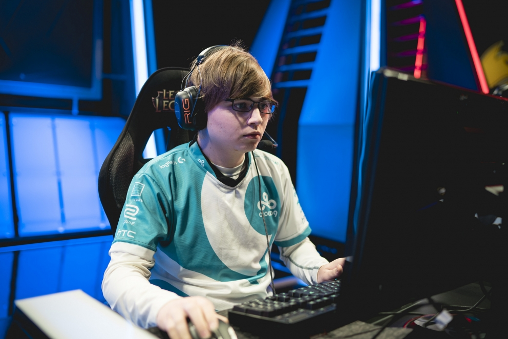

Scroll Down to Learn More
Zachary Scuderi, more commonly recognized by his in-game name, "Sneaky", is a professional League of Legends player on the starting roster of eSports team Cloud 9. He is widely known as one of the best players in his position, not only in the North American region, but also the entire world. 
Here, you will see the the highest highs, and the lowest lows, his career has reached.